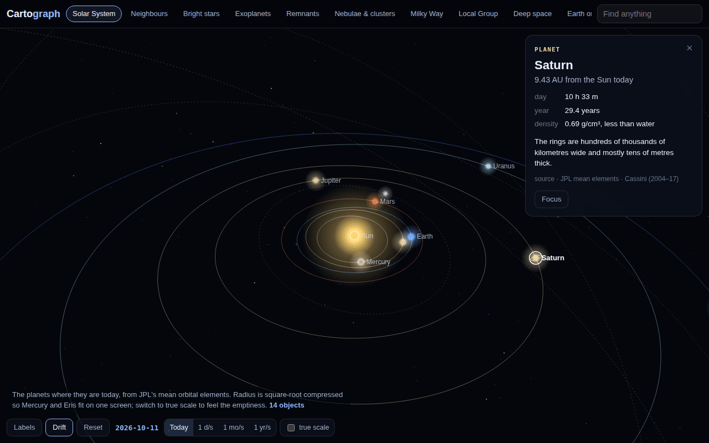

Solar System
The planets and dwarf planets where they are today, from JPL's mean orbital elements. Run time forward at a day, a month or a year a second, or switch to true scale to feel the emptiness.
From the planets to the first galaxies: every object at its real position, cited to the instrument that measured it, plus live satellites around Earth. Drag to turn it, pinch to zoom, tap anything.
Ten views, from today's planets to galaxies 13.5 billion light-years away

Most space maps are posters: pretty, flat, and quietly wrong about where things are. Cartograph puts every object at its measured position (right ascension, declination and distance, turned into galactic coordinates) and lets you walk out from the planets to the first galaxies, one scale at a time. Each object carries a card with its numbers and where they came from: Gaia, Hubble, JWST, the Event Horizon Telescope, NICER.
The planets and dwarf planets where they are today, from JPL's mean orbital elements. Run time forward at a day, a month or a year a second, or switch to true scale to feel the emptiness.
Every star system within 13 light-years at true scale, then the famous stars, then the planetary systems that changed the field: 51 Pegasi, TRAPPIST-1, WASP-39 and K2-18.
Black holes from Gaia BH1 to Sagittarius A*, pulsars, magnetars, stellar nurseries and clusters, then the whole Galaxy from outside, with everything plotted at its true distance from the Sun.
Andromeda and the dwarfs, out to M87, the first quasar and JWST's most distant galaxies. Then back home: live satellites propagated with SGP4, the same engine Orbit Watch uses.
No WebGL and no library: a 2D canvas with a small perspective camera, glow sprites and a few thousand background stars. That keeps it light on a phone and lets it open offline. Positions are converted from J2000 equatorial coordinates with the standard galactic rotation matrix, so Sagittarius A* lands within a tenth of a degree of the Galactic Centre.
Views that span many powers of ten use a logarithmic radius and label their grid rings, so the scale is never hidden.
Orbit Watch follows one satellite in real time. Cartograph is the wide view of everything else, and its Earth-orbit view shares Orbit Watch's propagation and element sets.
Values are rounded, and a contested distance (Betelgeuse, Deneb, Rigel) is given as a range rather than one confident number. Beyond about a billion light-years distances are light-travel time, not where those galaxies are now. The Milky Way's spiral arms are schematic; nobody has a clean photograph of them from outside. Dwarf-planet positions come from approximate elements and are good to a few degrees. Rebuilt from scratch in this revamp: 140+ objects and ten views, with more to come as they're checked.
Start at today's Earth and keep zooming out. It doesn't end where the poster did.
more in sky & worldkeep scrolling · it opens right here